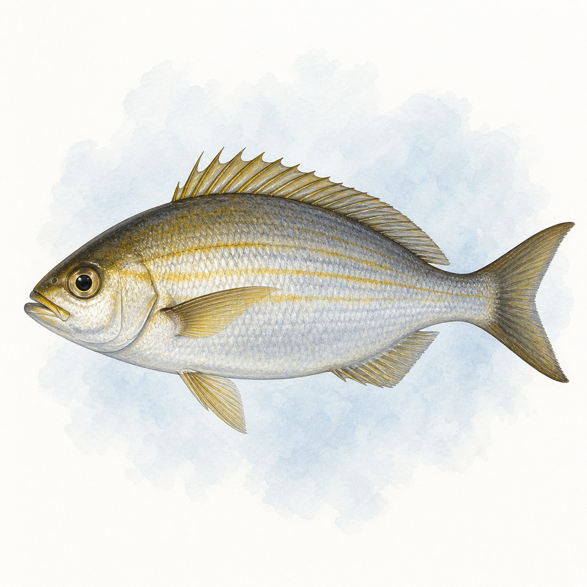

イサキ
イサキ
0〜141匹
35cm
今週 132便・49船宿
トップ › イサキ
神奈川・東京・千葉・茨城・静岡の5県の船宿を横断集計しています。
★ 今週実績あり（5魚種）
御三家は剣崎沖（327便）・洲崎沖・久里浜沖。港では大原・御前崎・松輪江奈が便数上位で、数なら松輪（一人あたり中央値55匹）と洲崎（同50匹）が当サイト集計の双璧。久里浜は秋まで便が続くのが特徴だ。
★ 今週実績あり（24エリア）
| 1月 | 2月 | 3月 | 4月 | 5月 | 6月 | 7月 | 8月 | 9月 | 10月 | 11月 | 12月 | |
|---|---|---|---|---|---|---|---|---|---|---|---|---|
| 数釣 | ||||||||||||
| 型釣 |
※ 過去3年の関東船釣り釣果データより集計（2023〜2025年）
シーズンは極端に初夏型。当サイトの過去3年・3,774便の集計では6月が1,084便と突出し、5〜7月の3か月に全体の6割が集中する。まさに「梅雨イサキ」の名の通りで、産卵前で脂が乗る時期と重なる。秋以降も久里浜などで細く続くが、本気で狙うなら6月を外す理由がない。 月ごとの詳しい振り返りは「2026年5月 イサキ釣果月報」で読める。
船釣り全般の Q&A（服装・船酔い・予約・ライフジャケット等）はよくある質問ページにまとめています。
関東イサキ船釣りの釣果は6月に実績が集中しています。5月・7月も狙える時期です。 → エリア別のシーズン傾向を見る
関東イサキ船釣りの主なエリアは大原港（540便）、御前崎港（509便）、松輪江奈港（483便）です。
関東イサキ船釣りの一日の釣果は15〜50匹が標準的なレンジです。中央値は31匹・上位10%の好日は60匹以上です。最高実績は150匹です（いずれも個人釣果ベース・船全体の合計数は除く）。
難易度は入門〜中級の釣りです。コマセ釣りで安定した釣果が期待でき、食味も抜群。数釣りと型釣りを両立できる人気ターゲットです。関東では110船宿が出船実績あり。多くの船宿でレンタルタックルや仕掛けの購入が可能です。 → 初心者向けガイドを見る
